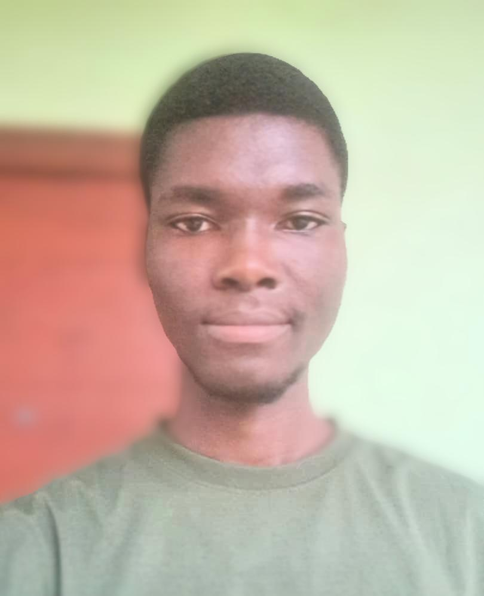

Jesse Anaglate | WDD 130
Hello! I'm Jesse Anaglate, a student with a passion for learning and exploring the world around me. My journey took a significant turn when I began my studies with BYU Pathway. This experience has not only broadened my knowledge but also opened my eyes to new perspectives that I wouldn't have encountered otherwise. When I’m not hitting the books, you can find me on the basketball court, where I love to unwind and enjoy the game with friends. I’m also a huge fan of music, whether I'm jamming out to my favorite tunes or discovering new artists. Video games are another passion of mine—there's nothing quite like diving into a virtual world to escape and challenge myself. Books are my constant companions, especially when it comes to fiction; I love getting lost in a good story. I’m also diving into the realms of web development and computer programming, where I find joy in creating and problem-solving. Each of these interests fuels my creativity and keeps me motivated to learn more every day. I'm currently working on a project called "Rafting Website" and I'm excited to learn more about web development and design. I'm looking forward to learning more about HTML, CSS, and JavaScript and I'm excited about what lies ahead and the adventures that await!